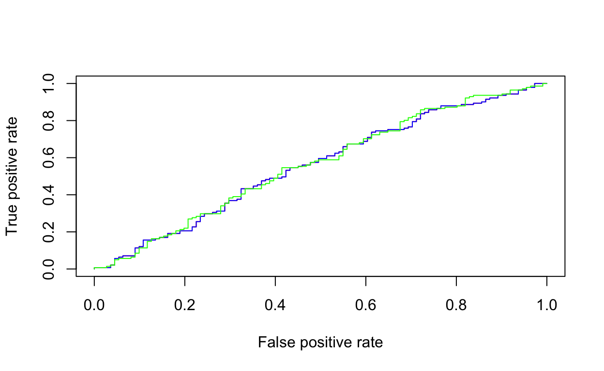

Currently, you have your retirement investments managed by a professional broker. However, recently your friends have been discussing how they use online services that allow them to self-direct their investments (i.e. E-Trade, Fidelity, Ameritrade). Moreover, they have all started to apply a highly technical trading technique that has them betting that the market will increased based on the previous days’ returns. They keep asking you to get in on the excitement but you remain skeptical and decide to do some analysis to test this theory.
Using stock market data (ISLR::Smarket), use logistic regression and linear/quadratic discriminant analysis to analyze how well you can predict if the market will increase or decrease based on the percentage returns for prior trading days. This data set consists of percentage returns for the S&P 500 stock index over 1,250 days, from the beginning of 2001 until the end of 2005. For each date, percentage returns for each of the five previous trading days, Lag1 through Lag5 are provided. In addition Volume (the number of shares traded on the previous day, in billions), Today (the percentage return on the date in question) and Direction (whether the market was Up or Down on this date) are provided.
(market <- head(ISLR::Smarket))Go ahead and do some preliminary exploratory analysis on this data.
market <- head(ISLR::Smarket)marketsummary(market)
GGally::ggpairs(market)Let’s model this data with logistic regression, LDA, and QDA to assess how well each model does in predicting the direction of the stock market based on previous day returns. But first we need to prepare our data. Go ahead and use the observations from 2001-2004 as the training data sets and then use the observations from 2005 as the testing data. In essence, we’re going to see if we can train a model on 2001-2004 data to accurately predict market changes in 2005. Go ahead and create the train and test data sets.
# create your training data set
train <- subset(ISLR::Smarket, Year < 2005)# create your testing data set
test <- subset(ISLR::Smarket, Year == 2005)With your training and test data sets established, fit a logistic regression model to the training data (Direction ~ Lag1 + Lag2 + Lag3 + Lag4 + Lag5 + Volume). Look at the summary of your model. Does it look convincing?
train <- subset(ISLR::Smarket, Year < 2005)
test <- subset(ISLR::Smarket, Year == 2005)
glm.fit <- glm(Direction ~ Lag1 + Lag2 + Lag3 + Lag4 + Lag5 + Volume,
data = train,
family = binomial)
train <- subset(ISLR::Smarket, Year < 2005)
test <- subset(ISLR::Smarket, Year == 2005)glm.fit <- glm(Direction ~ Lag1 + Lag2 + Lag3 + Lag4 + Lag5 + Volume,
data = train,
family = binomial)summary(glm.fit)Although this model is not good at all, let’s use it to compute the predictions for 2005 and compare them to the actual movements of the market over that time period with a confusion matrix. In this next code chunk, perform the following:
predict to compute predictions for the 2005 test dataglm.fit <- glm(Direction ~ Lag1 + Lag2 + Lag3 + Lag4 + Lag5 + Volume,
data = train,
family = binomial)
# compute predictions
# create confusion matrix
# calculate overall error rate
# calculate precision# compute predictions
glm.probs <- predict(glm.fit, test, type="response")# create confusion matrix
table(test$Direction, ifelse(glm.probs > 0.5, "Up", "Down"))# calculate overall error rate
mean(ifelse(glm.probs > 0.5, "Up", "Down") != test$Direction)# calculate precision
44 / (97 + 44)Remember that using predictors that have no relationship with the response tends to cause a deterioration in the test error rate (since such predictors cause an increase in variance without a corresponding decrease in bias), and so removing such predictors may in turn yield an improvement. Assess this model using the caret::varImp function to see which two variables are considered “most important”.
glm.fit <- glm(Direction ~ Lag1 + Lag2 + Lag3 + Lag4 + Lag5 + Volume,
data = train,
family = binomial)
# compute importance of variables# compute importance of variables
caret::varImp(glm.fit)You should find that the variables that appear to have the highest importance rating are Lag1 and Lag2. Re-fit the logistic regression model with just these two variables and reassess performance. Do you see much improvement?
train <- subset(ISLR::Smarket, Year < 2005)
test <- subset(ISLR::Smarket, Year == 2005)# re-fit logistic regression model# re-fit logistic regression model
glm.fit <- glm(Direction ~ Lag1 + Lag2,
data = train,
family = binomial)
summary(glm.fit)We don’t see much improvement within our model summary do we? What about our prediction accuracy? Do we see much improvement?
glm.fit <- glm(Direction ~ Lag1 + Lag2,
data = train,
family = binomial)
# compute predictions
# create confusion matrix
# calculate overall error rate
# calculate precision# compute predictions
glm.probs <- predict(glm.fit, test, type="response")# create confusion matrix
table(test$Direction, ifelse(glm.probs > 0.5, "Up", "Down"))# calculate overall error rate
mean(ifelse(glm.probs > 0.5, "Up", "Down") != test$Direction)# calculate precision
106 / (35 + 106)Yes, our prediction classification rates have improved slightly. Our error rate has decreased to 44% (accuracy = 56%) and our precision has increased to 75%. However, its worth noting that the market moved up 56% of the time in 2005 and moved down 44% of the time. Thus, the logistic regression approach is no better than a naive approach!
Go ahead and perform LDA on the stock market data. Fit the model such that Direction ~ Lag1 + Lag2. Check out the model summary.
train <- subset(ISLR::Smarket, Year < 2005)
test <- subset(ISLR::Smarket, Year == 2005)# fit model
# check out the model summary# fit model
lda.fit <- lda(Direction ~ Lag1 + Lag2, data = train)# check out the model summary
lda.fitOur summary shows that our prior probabilities of market movement are 49% (down) and 51% (up). The group means indicate that there is a tendency for the previous 2 days’ returns to be negative on days when the market increases, and a tendency for the previous days’ returns to be positive on days when the market declines.
Let’s go ahead and predict with our LDA model and assess the confusion matrix to see if our prediction rates differ from those produced by logistic regression.
lda.fit <- lda(Direction ~ Lag1 + Lag2, data = train)
# compute predictions
# create confusion matrix
# calculate overall error rate
# calculate precision# compute predictions
test.predicted.lda <- predict(lda.fit, newdata = test)# create confusion matrix
table(test$Direction, test.predicted.lda$class)# calculate overall error rate
mean(test.predicted.lda$class != test$Direction)# calculate precision
106 / (35 + 106)The overall error and the precision of our LDA and logistic regression models are the same! This illustrates how logistic regression and LDA can produce surprisingly similar results!
Lastly, let’s predict with a QDA model to see if we can improve our performance. Go ahead and fit a QDA model with Direction ~ Lag1 + Lag2 and check out the model summary.
train <- subset(ISLR::Smarket, Year < 2005)
test <- subset(ISLR::Smarket, Year == 2005)# fit model
# check out the model summary# fit model
qda.fit <- qda(Direction ~ Lag1 + Lag2, data = train)# check out the model summary
qda.fitThe model summary won’t differ much from the LDA model. To see if the QDA model does a better job predicting, go ahead and predict with our QDA model and assess the confusion matrix to see if the prediction rates differ from those produced by logistic regression and LDA.
qda.fit <- qda(Direction ~ Lag1 + Lag2, data = train)
# compute predictions
# create confusion matrix
# calculate overall error rate
# calculate precision# compute predictions
test.predicted.qda <- predict(qda.fit, newdata = test)# create confusion matrix
table(test$Direction, test.predicted.qda$class)# calculate overall error rate
mean(test.predicted.qda$class != test$Direction)# calculate precision
121 / (20 + 121)Surprisingly, the QDA predictions are accurate almost 60% of the time (overall error rate is 40%)! Furthermore, the precision of the model is 86%. This level of accuracy is quite impressive for stock market data, which is known to be quite hard to model accurately. This suggests that the quadratic form assumed by QDA may capture the true relationship more accurately than the linear forms assumed by LDA and logistic regression.
Let’s compare the ROC curves for our different models. Although you can’t tell, the logistic regression and LDA ROC curves sit directly on top of one another. However, we can see how the QDA (green) differs slightly.
# models
glm.fit <- glm(Direction ~ Lag1 + Lag2, data = train, family = binomial)
lda.fit <- lda(Direction ~ Lag1 + Lag2, data = train)
qda.fit <- qda(Direction ~ Lag1 + Lag2, data = train)
# predictions
glm.probs <- predict(glm.fit, test, type = "response")
test.predicted.lda <- predict(lda.fit, newdata = test)
test.predicted.qda <- predict(qda.fit, newdata = test)
# create ROC curves
library(ROCR)## Loading required package: gplots##
## Attaching package: 'gplots'## The following object is masked from 'package:stats':
##
## lowessp1 <- prediction(glm.probs, test$Direction) %>%
performance(measure = "tpr", x.measure = "fpr")
p2 <- prediction(test.predicted.lda$posterior[,2], test$Direction) %>%
performance(measure = "tpr", x.measure = "fpr")
p3 <- prediction(test.predicted.qda$posterior[,2], test$Direction) %>%
performance(measure = "tpr", x.measure = "fpr")
plot(p1, col = "red")
plot(p2, add = TRUE, col = "blue")
plot(p3, add = TRUE, col = "green")
The difference is subtle. You can see where we experience increases in the true positive predictions (where the green line goes above the red and blue lines). And although our precision increases, overall AUC does not appear to be that much higher. Do you remember how to compute the AUC? Give it a try.
train <- subset(ISLR::Smarket, Year < 2005)
test <- subset(ISLR::Smarket, Year == 2005)
# models
glm.fit <- glm(Direction ~ Lag1 + Lag2, data = train, family = binomial)
lda.fit <- lda(Direction ~ Lag1 + Lag2, data = train)
qda.fit <- qda(Direction ~ Lag1 + Lag2, data = train)# predictions
glm.probs <- predict(glm.fit, test, type = "response")
test.predicted.lda <- predict(lda.fit, newdata = test)
test.predicted.qda <- predict(qda.fit, newdata = test)
# compute AUC
library(ROCR)
# Logistic regression AUC
# LDA AUC
# QDA AUC# Logistic regression AUC
prediction(glm.probs, test$Direction) %>%
performance(measure = "auc") %>%
.@y.values# LDA AUC
prediction(test.predicted.lda$posterior[,2], test$Direction) %>%
performance(measure = "auc") %>%
.@y.values# QDA AUC
prediction(test.predicted.qda$posterior[,2], test$Direction) %>%
performance(measure = "auc") %>%
.@y.values